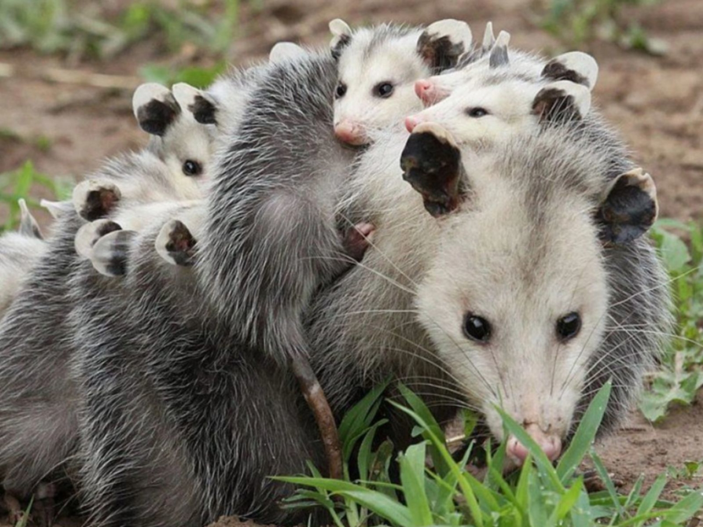

El tlacuache es un mamífero marsupial de la familia Didelphidae. Se encuentra principalmente en América, desde el sur de Canadá hasta Argentina. Es conocido por su aspecto peculiar y su capacidad para colgar de su cola. Además, cuenta con una amplia distribución geográfica, lo que le permite adaptarse a diferentes tipos de hábitats.
El tlacuache es un animal altamente adaptable y puede vivir en diversos entornos: Bosques tropicales y subtropicales, Bosques secos y secundarios, Zonas semiáridas y praderas y Áreas urbanas y rurales